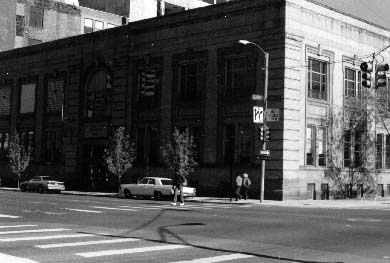

20th Street Gym, 20th and Curtis

``Especially on Wednesday and Saturday nights throughout the remainder of
the Thirties
did we consistently meet at the Bath House on 20th and Curtis,
a place of shower cleanliness and smut, pool joy and fatigue, gym exertion,
shuffleboard and table tennis skill, which the city provided free for such
as we...'' [First Third p. 103]
Literary Kicks
Neal's Denver
Contributed by
Andrew Burnett